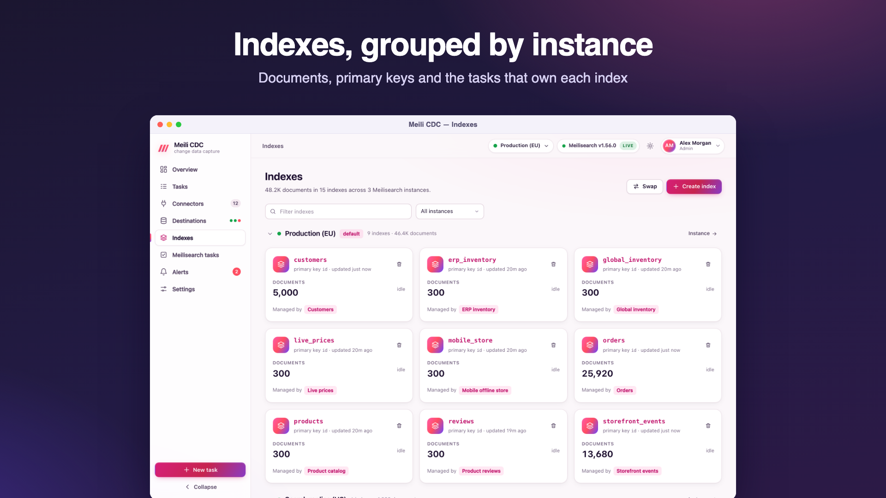
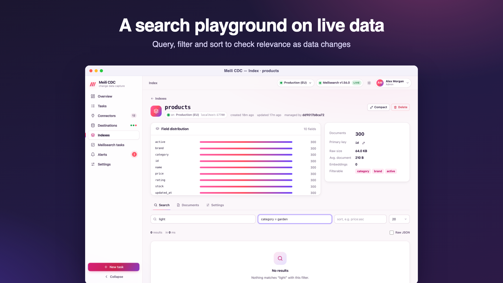
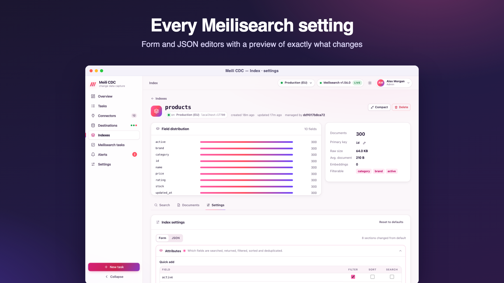
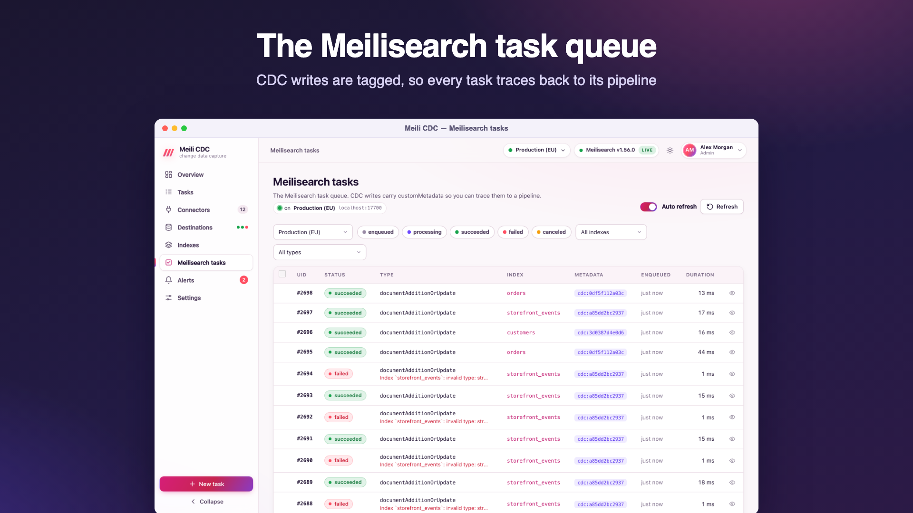

Index management
meilisearch-cdc manages the Meilisearch side too: index settings with drift detection, primary keys, swaps, compaction, a search playground and a documents browser, for every destination.

The Indexes page
All instances are queried in parallel and their indexes listed per instance (default first). An unreachable instance is shown with its error. Each index shows its primary key, document count, whether it is indexing, and the tasks that write to it. Actions (admin):
- Create index with a uid and an optional primary key. Usually unnecessary: tasks create their index on first write.
- Swap indexes: exchange the contents of two indexes atomically, or rename one to a new uid.
- Compact: ask Meilisearch to compact the index's storage.
- Delete: type the uid to confirm. Refused with
409while a running task writes to the index; stop the task first.
An index's page
Open an index for three tabs:
Search
A playground for Meilisearch searches: query, filter expression, sort (field:asc or field:desc, comma separated), result limit, and the raw JSON response. Use it to check that a change in the source reached the index, or to try filters before building them into your application.

Documents
Browse documents page by page and open any document as JSON.
Settings
The live settings in the settings editor. Changes are previewed (which keys change, from what to what) before they are applied; applying waits up to 30 seconds for Meilisearch and shows its error when it rejects the update. Reset restores Meilisearch's defaults. The primary key of an index can be changed here only while it holds no documents (409 otherwise).
The settings editor
The same editor is used in the task wizard (desired settings) and on index pages (live settings). It has a form view and a JSON view. Only the keys you set are sent; unset keys keep Meilisearch's defaults. Sections:

| Section | Settings | What they do |
|---|---|---|
| Attributes | searchableAttributes, displayedAttributes, filterableAttributes, sortableAttributes, distinctAttribute | Which fields are searched (in priority order), returned, usable in filters, usable for sorting, and deduplicated. Filterable attributes can use Meilisearch's granular form (attribute patterns with per-pattern features such as facet search or equality-only filters). Field names discovered from the source are offered as suggestions. |
| Ranking rules | rankingRules | The order of relevancy criteria (words, typo, proximity, attribute, sort, exactness) and custom rules such as price:asc. |
| Typo tolerance | typoTolerance | On or off, minimum word sizes for one and two typos, and words, attributes and numbers where typos are not allowed. |
| Synonyms | synonyms | Words that should match each other. |
| Words & tokens | stopWords, dictionary, separatorTokens, nonSeparatorTokens | Ignored words, custom dictionary entries and how text is split into words. |
| Facets, pagination & search | faceting, pagination, proximityPrecision, searchCutoffMs, prefixSearch, facetSearch | Maximum values per facet and facet sorting, the maximum total hits, word-proximity precision, a search time limit, prefix search and facet search. |
| Localized attributes | localizedAttributes | Force the languages used to tokenize some fields. |
| Embedders | embedders | Vector embedders for semantic and hybrid search (source, model or user-provided dimensions, document template, binary quantization…). |
Desired settings in a task are validated when the task is saved: unknown keys are rejected so a typo cannot silently do nothing.
Managed settings and drift
With Manage index settings on, a task owns the settings it declares:
- When the task starts, the live settings are compared with the desired ones and only the differences are applied (
applying 3 changed index settingsin the log). - The task's Index settings tab shows desired versus live values, highlights drift (someone changed the index by hand, or a deployment changed the task), and applies the desired settings with one click.
- Only keys present in the desired settings are compared, so settings the task does not manage never show up as drift. Lists whose order does not matter (filterable and sortable attributes, for example) are compared as sets.
- If Meilisearch rejects the update when the task starts, the start fails with Meilisearch's message (
apply settings: …) and the task keeps retrying with backoff until the settings are fixed. Desired settings that cannot be parsed fail the task outright.
Primary key guard
When a task starts, it makes sure its index uses the task's primary key field:
- A missing index is created with that primary key.
- An empty index with another primary key is switched to it.
- An index that has documents and another primary key is refused, and the task fails:
index "products" uses "sku" but the task writes "id" and the index holds 1200 documents; use a new index, change mapping.primaryKeyField, or resync with zero-downtime enabled. A zero-downtime resync builds a fresh shadow index with the new key and swaps it in.
Instance-level tools
The task queue, dumps, snapshots and experimental features belong to a whole Meilisearch instance and live on the destination's page; see per-instance pages. The top-level Meilisearch tasks page shows the task queue of every instance.
